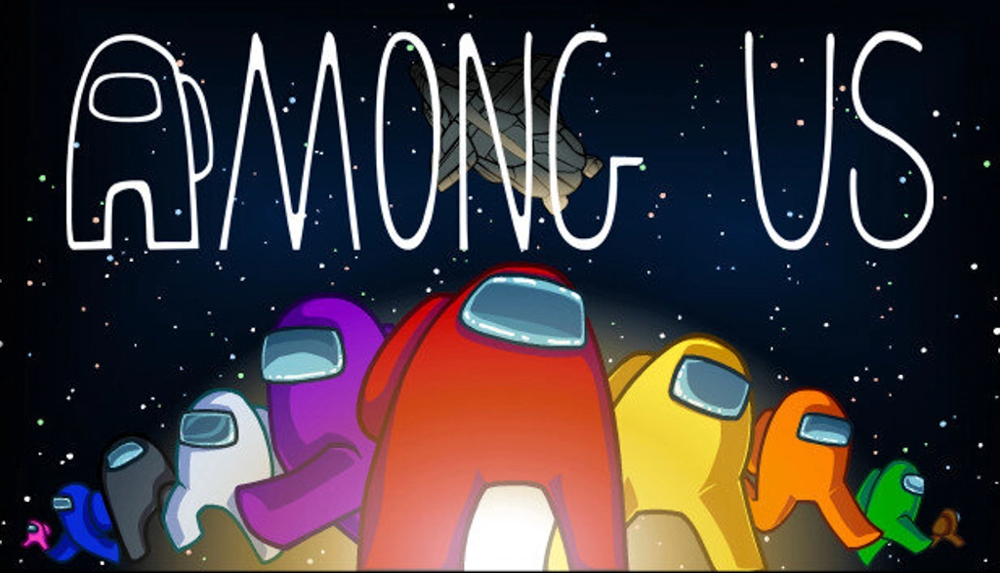
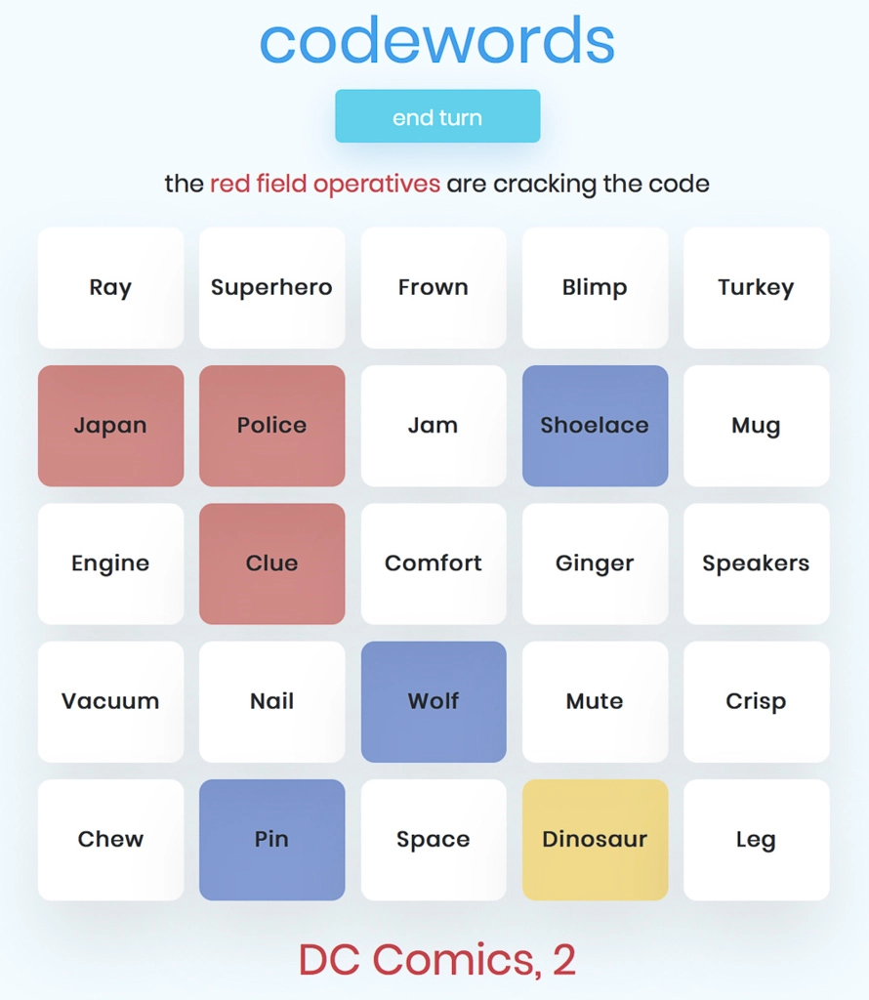
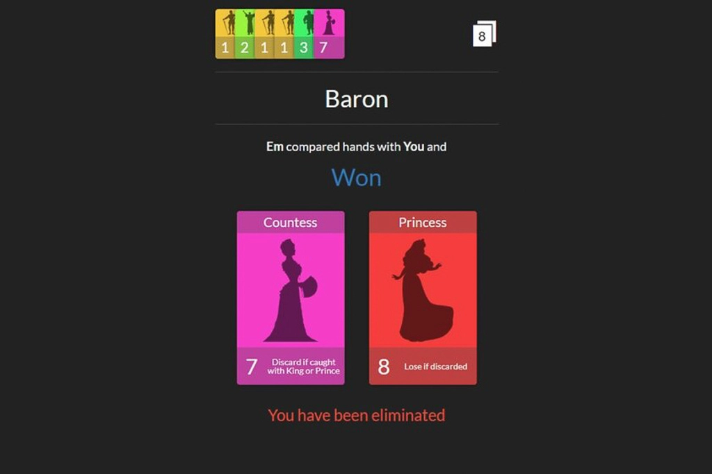
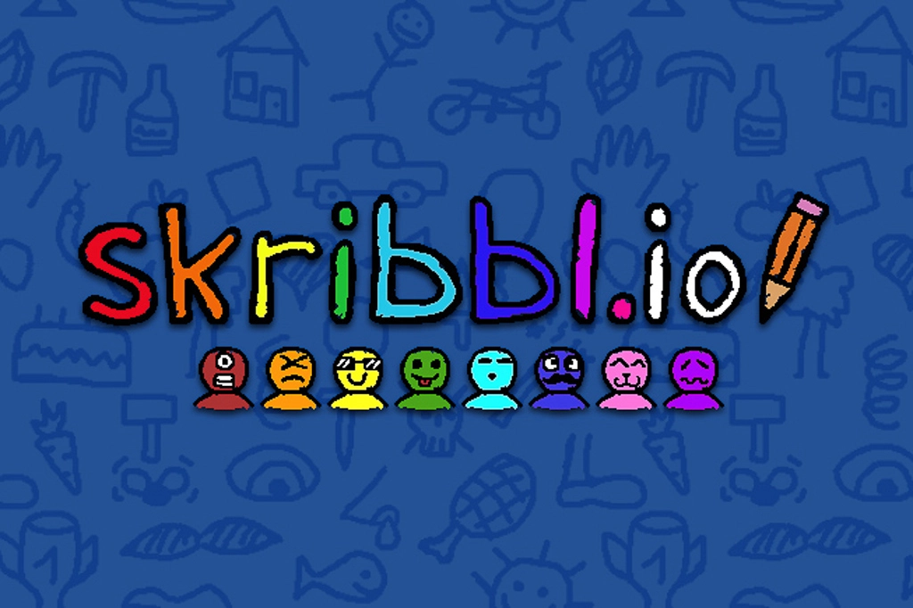
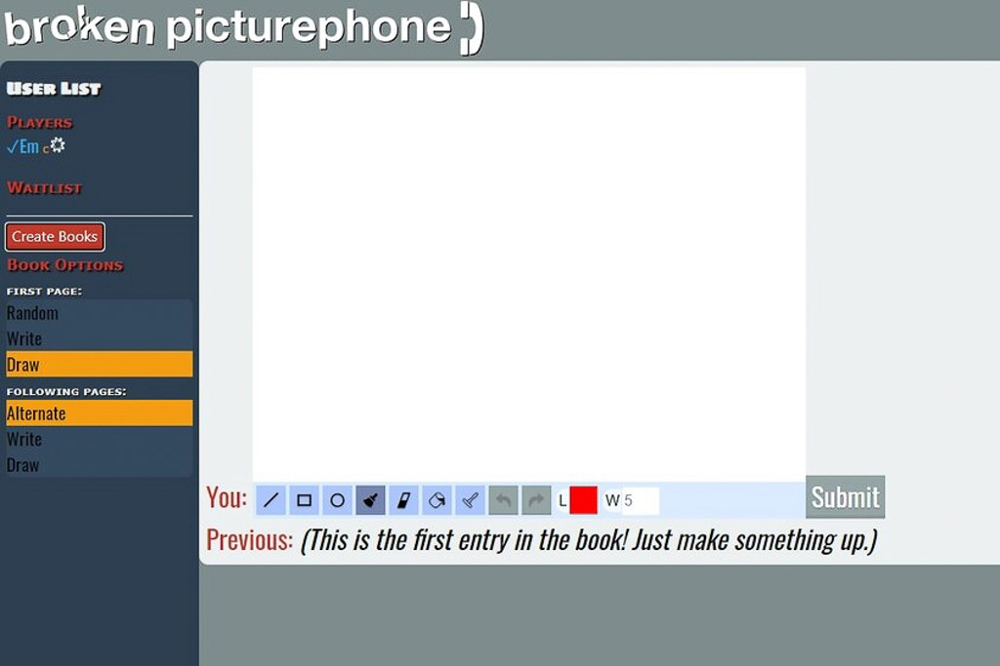
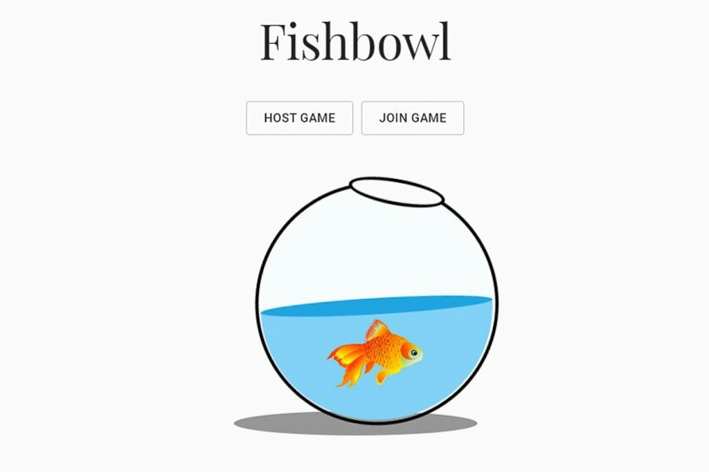
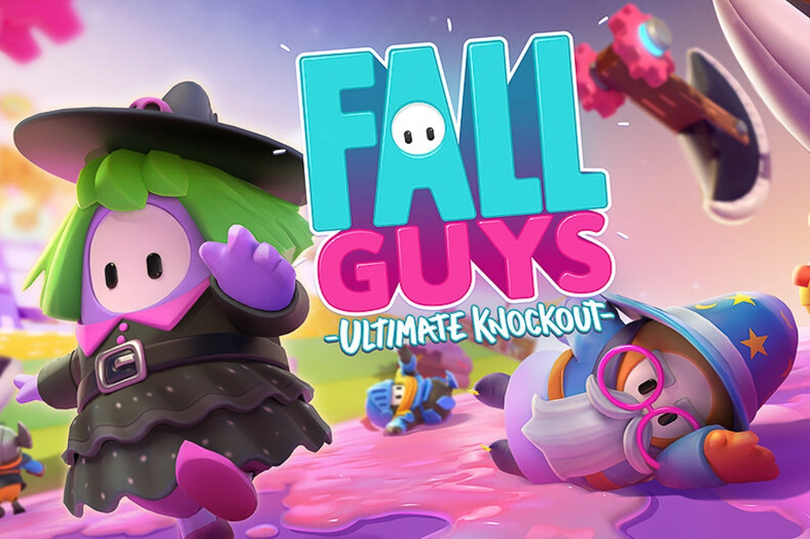
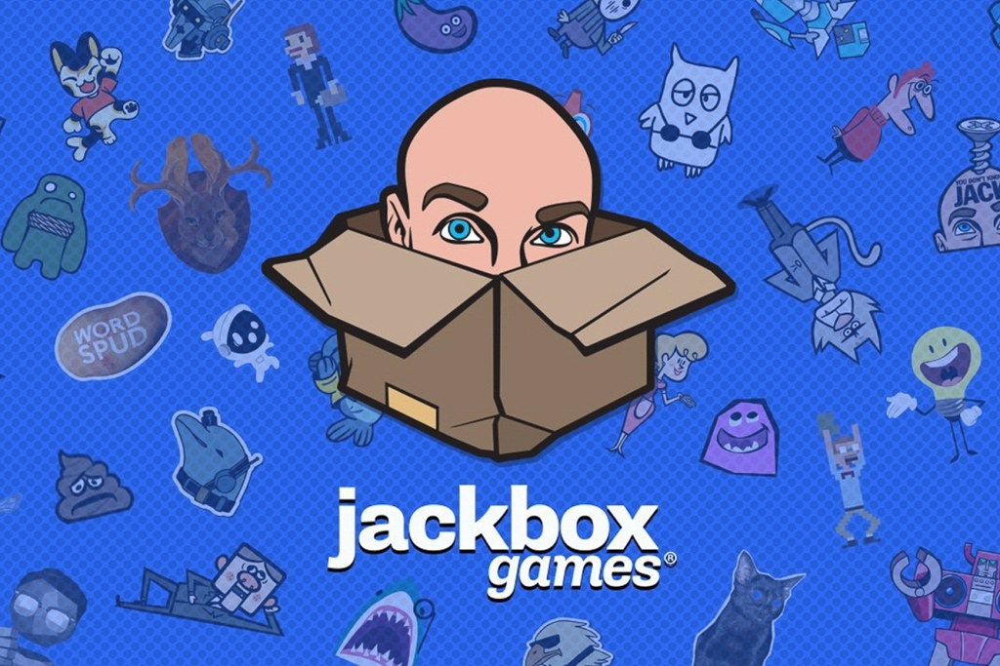

Quarantine Games to Play with Friends
Nov 22 - Written by Bonnie and Emily
Can you believe it's already been eight months of quarantine?! It's time for some new virtual things to do with your friends and family!
We’ve always loved meeting up with our friends and spending the night playing board games, but ever since quarantine began, this became a very challenging thing to do. We miss our game nights!! So, over the past couple of months, we’ve found a new way to enjoy our game nights safely and virtually with a variety of online games that we want to share with you!
Free Games
Among Us
If you’re caught up on all the new trends going around lately, you’ve likely heard of the game Among Us or maybe you’ve seen all the gameplay videos filling up on Youtube feeds. In short, this game is an upgraded version of the game Mafia but with a slight twist--you have to finish your tasks while finding the imposters! It's some serious multi-tasking work. The game is simple, there are two teams, imposters and crewmates, and three ways for the teams to win the game. The imposters can win by killing off all the crewmates and the crewmates can win by finding all the imposters or completing all their tasks. This game is full of lies, deceit and the occasional scream as an imposter may be chasing you down to score a kill making it the perfect game for a large group of 10!
Codenames - http://codewordsgame.com/
If you haven’t played this classic card game yet, you can still play with your friends virtually! Codenames is a word based game where there are two teams and two roles, a spy master and an operative. The spymaster gives out clues to their teammates in order to get them to guess the words that are assigned to their team! The online version allows you to submit clues and a number of words associated with the clue right on the screen so that all teammates get easy access! If you really want to, you could also have breakout rooms for each team to secretly discuss which words they might think the clue is hinting at before they take their guesses. This game is ideal for an even number of players; however, if you don’t mind odd teams then any number of players will work.
Love Letter - https://netgames.io/games/love-letter/
Love Letter is a virtual card based game filled with risk, luck, and deduction and is perfect for a small group of 2 to 4 friends! The deck includes 16 cards, each with a different role, where a player is handed one card each time. On each player's turn, they draw a card and will have to decide which of the two to remove from the game. The objective in the end is to get your hands on that Princess Annette card! Be prepared to make some strategic guesses at what card your friends might be holding and coming up with some tactics to get the highest role card by the end of the round.
Skribbl.io - https://skribbl.io/
Skribbl.io is a more chaotic and hilarious virtual version of the classic game of pictionary that you can play with up to 12 people. With a drawing board embedded into the website and a random word generator to make your life a little bit easier than thinking about what words to put in the game. What's even nicer about the virtual version of this game is that if you do want to add in some of your own words, there's a custom words option to bring the game to a whole new level! This is a great game to pick up if you have a short amount of time to hang out with your friends or are just looking to have some fun doodling and coloring! Make sure to read the chat log while you’re playing the game to see what kinds of funny guesses your friends make!
Broken Picture Phone - https://www.brokenpicturephone.com/
If the classic game of Pictionary is too boring for you, Broken Picture Phone takes it up a notch by combining Pictionary with the classic game of Telephone. The game allows for you and your friends to draw up any scene you want or even write your own prompts that will create some of the wackiest stories ever! What's best is that these stories are a collective effort among you and your friends and you’ll be able to see how each one of your friends may be thinking a little differently! Now saving the best part for last, you’ll all be able to share the drawings and prompts that you all made come together into a great and humorous creation!
Fishbowl - https://fishbowl-game.com/
Fishbowl, a combination of taboo, charades, and password is the perfect party game for a large crowd or just a few friends--most of all you'll witness the most chaotic zoom call ever, which just makes your game night that much more fun and lively. Each game has three rounds using the same words, where each team will have to use the words to play taboo, charades, and password for each round respectively. To spice up the game a little more, we like to set different themes for each time we play just to keep our friends on their toes! For example, only using words relating to our college experience to play each round also became a wonderful nostalgic game where we reminisced on our college memories.
Games Available to Purchase
Fall Guys
Fall Guys, the virtual arena of wipe out filled jelly bean inspired avatars! The game is full of obstacle courses and team games where you can dress up your jelly bean avatar into different costumes and skins that you win from playing the game! What's best about this game is that it's super versatile and can be played on your own but is even more fun to play with a few friends. This game is also great for all skill levels with a good mix of easy and challenging mini games for the average gamer. One of the mini games, tail tag, may still be one of our least favorite mini games but like they say, practice makes perfect. Neither of us have yet to win a game of Fall guys, but we still enjoy playing and competing with players from all over the world and also getting to hit that arena of obstacles with our friends hand in hand!
Jackbox
The classic online party game that blew up a few years ago is still a wonderful game to play quarantine style! Since there's so many variety packs, recently coming out with their 7th edition, you and your friends will never get bored of the games! The best part is that Jackbox is super economically friendly and only requires one person within your friend group to buy the game for everyone else to play along! If you have seven friends, and each person buys a pack then you’ll have an endless amount of games to play foreverrr!! Some of our favorite games in the Jackbox series include: Champ’d Up, Role Models, and Trivia Murder Party.